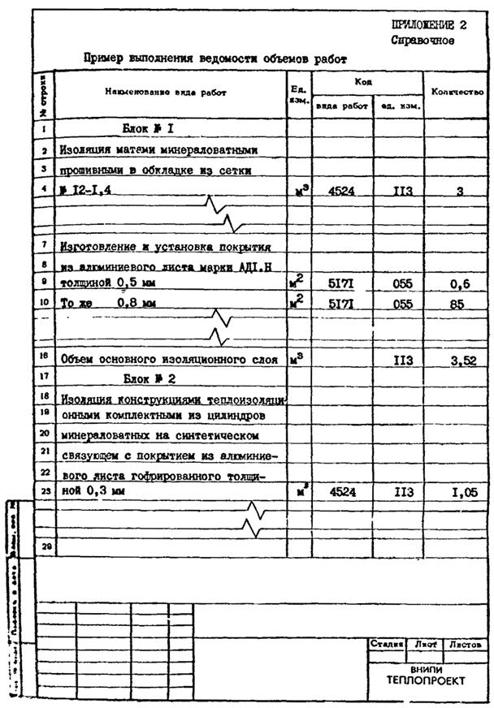
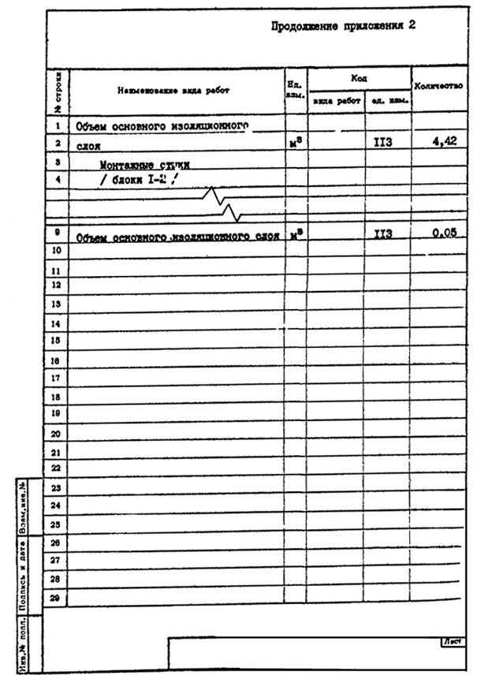
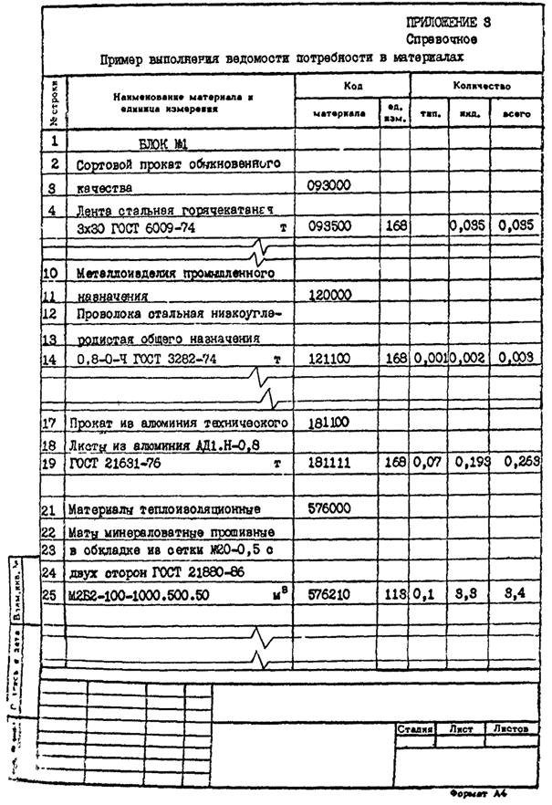
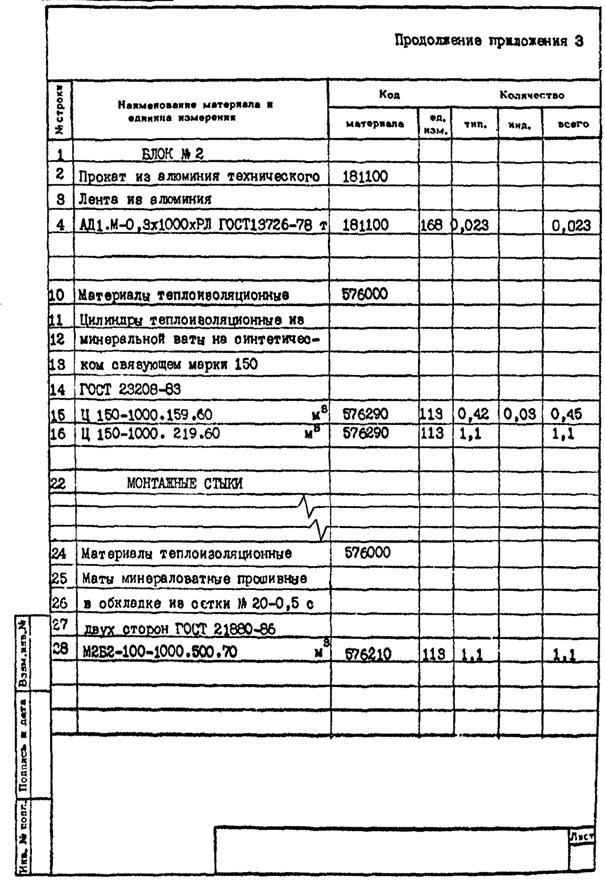
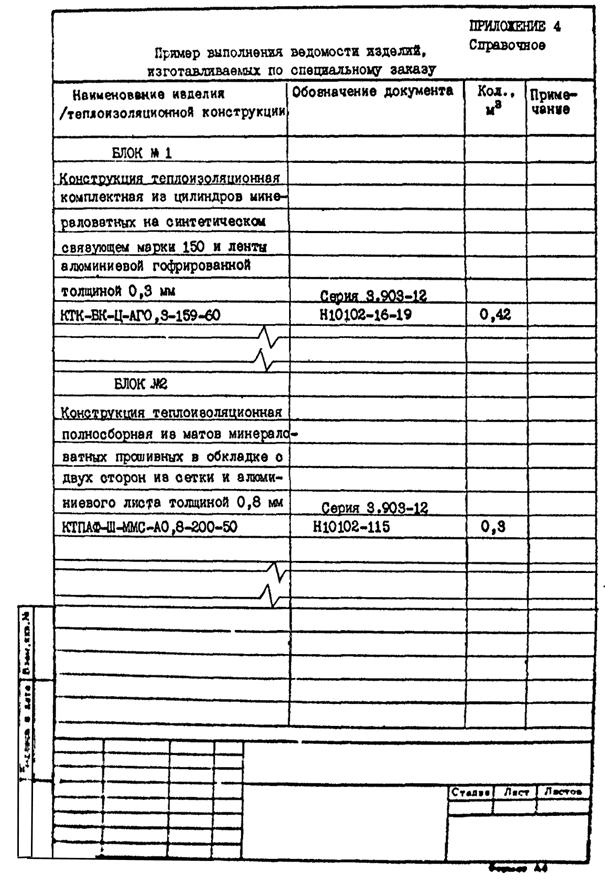

ВЕДОМСТВЕННЫЕ СТРОИТЕЛЬНЫЕ НОРМЫ
ТЕХНИЧЕСКИЕ
ТРЕБОВАНИЯ (МОНТАЖНЫЕ)
К ПРОЕКТИРОВАНИЮ ОБЪЕКТОВ НЕФТЕПЕРЕРАБАТЫВАЮЩЕЙ
И НЕФТЕХИМИЧЕСКОЙ ПРОМЫШЛЕННОСТИ
С ПРИМЕНЕНИЕМ БЛОКОВ.
ТЕПЛОВАЯ ИЗОЛЯЦИЯ
ВСН
500-87
ММСС СССР
МИНИСТЕРСТВО
МОНТАЖНЫХ
И СПЕЦИАЛЬНЫХ СТРОИТЕЛЬНЫХ РАБОТ СССР
Москва 1987
РАЗРАБОТАНЫ ВНИПИТеплопроект
Кузнецов Г.Ф., Горбачев, В.П., Попова В.В.
ВНЕСЕНЫ И ПОДГОТОВЛЕНЫ К УТВЕРЖДЕНИЮ
Главтепломонтажом
Минмонтажспецстроя СССР
|
МИНМОНТАЖСПЕЦСТРОЙ СССР |
ВЕДОМСТВЕННЫЕ СТРОИТЕЛЬНЫЕ НОРМЫ |
ВСН
500-87 |
|
Технические
требования (монтажные) к проектированию объектов нефтеперерабатывающей и
нефтехимической промышленности с применением блоков. |
Введен впервые |
Настоящие нормы распространяются на разработку рабочих проектов и рабочей документации на тепловую изоляцию оборудования и трубопроводов объектов нефтеперерабатывающей и нефтехимической промышленности, строительство которых осуществляется с применением технологических блоков и блоков коммуникации (в дальнейшем изложении блоков).
Нормы устанавливают требования:
к компоновке составных частей блоков и их подготовке под изоляцию с учетом конструктивных особенностей изоляции блоков;
к конструкциям тепловой изоляции монтажных стыков (участков в местах взаимной стыковки составных частей смежных блоков при их установке в проектное положение);
к составу, содержанию и оформлению документации на тепловую изоляцию блоков.
|
Внесены
|
УТВЕРЖДЕНЫ МИНМОНТАЖСПЕЦСТРОЕМ СССР «27»
марта 1987 г. |
СРОК ВВЕДЕНИЯ с 1 января 1988 г. |
ВСН 442-83/Минмонтажспецстрой СССР и ВСН 213-83/Миннефтехимпром СССР;
«Технические требования (монтажные) к проектированию объектов нефтеперерабатывающей и нефтехимической промышленности с применением блоков»;
ВСН 215-84/Миннефтехимпром СССР и ВСН 453-84/Минмонтажспецстрой СССР;
«Инструкция по разработке проектной документации для строительства объектов нефтеперерабатывающей и нефтехимической промышленности с применением блоков»;
СНиП 3.05.05-84 «Технологическое оборудование и технологические трубопроводы»;
СН 542-81 «Инструкция по проектированию тепловой изоляции оборудования и трубопроводов промышленных предприятий»;
СН 527-80 «Инструкция по проектированию технологических стальных трубопроводов Ру до 10 МПа».
1.2. При проектировании блоков тепловая изоляция должна рассматриваться как одна из составных частей блоков.
1.3. Проектирование блоков, а также тепловой изоляции блоков и монтажных стыков производится с учетом:
выполнения изоляции блоков до их установки в проектное положение;
выполнения изоляции монтажных стыков после установки блоков в проектное положение.
2.1. Рабочий проект и рабочая документация блока должны разрабатываться в соответствии с требованиями ВСН 442-83 и ВСН 213-83 и дополнительными требованиями настоящих норм.
2.1.1. При компоновке блока расстояния в свету между изолируемыми поверхностями составных частей блока должны быть не менее указанных в СН 527-80.
2.1.2. Устройства для строповки блоков должны обеспечивать сохранность изоляции от механических повреждений в процессе транспортировки и установки блоков в проектное положение и должны быть рассчитаны на подъем блоков грузоподъемными средствами с учетом массы изоляции.
2.1.3. Рабочий проект (рабочая документация) блока должен разрабатываться с учетом обеспечения технологической последовательности выполнения всех видов работ, имея ввиду, что монтаж тепловой изоляции является, как правило, завершающим этапом и все предыдущие работы по сборке блока, включая монтаж строповочных устройств, обустройство изолируемых поверхностей деталями крепления изоляции и испытание оборудования и трубопроводов должны быть в максимальной степени завершены до начала работ по изоляции блоков.
2.1.4. В проектной документации на блоки должны быть предусмотрены требования к подготовке поверхности составных частей блока и монтажных стыков под изоляцию (очистке, окраске, обустройству деталями крепления изоляции и строповочными устройствами).
3.1. Конструкции тепловой изоляции блоков и монтажных стыков должны разрабатываться в соответствии с действующими нормами проектирования и дополнительными требованиями настоящих норм.
3.1.1. Для выполнения изоляции блоков и монтажных стыков следует применять преимущественно индустриальные теплоизоляционные конструкции максимальной монтажной готовности по ТУ 36-1180-85 или специально разработанные индустриальные конструкции.
3.1.2. Торцы изоляции должны отступать от монтажных стыков на минимальном расстоянии с учетом обеспечения сохранности изоляции в процессе стыковки блоков между собой при их установке в проектное положение. Допускается изменение этого расстояния в пределах типоразмеров теплоизоляционных изделий и конструкций, применяемых для изоляции стыков.
Торцы изоляции должны быть отделаны металлическими диафрагмами для предотвращения попадания влаги в толщу изоляции и повреждения изоляции в процессе транспортировки и монтажа блоков.
3.1.3. Конструкции изоляции должны иметь прочность, обеспечивающую сохранность изоляции в процессе транспортировки и установки блоков в проектное положение (для обеспечения прочности изоляции рекомендуется применять опорные кольца, подвески, разгрузочные полки).
4.1. Рабочая документация на тепловую изоляцию блоков по своему составу, содержанию и оформлению должна разрабатываться в соответствии с требованиями действующих нормативных документов и кроме того, должна отвечать дополнительным требованиям настоящих норм.
4.1.1. Помимо документов, предусмотренных действующими нормативными документами в состав рабочей документации на тепловую изоляцию должны входить:
чертежи общих видов блоков (основные планы и разрезы) с позиционным обозначением изолируемых составных частей блоков (оборудования, трубопроводов, отводов, арматуры, фланцевых соединений и т.д.) и с указанием габаритов блоков;
схемы расположения блоков в проектном положении по каждому объекту (технологическому узлу, сооружению, установке) с обозначением номеров и границ блоков и отметок их расположения.
4.1.2. Рабочие чертежи тепловой изоляции должны разрабатываться раздельно по блокам в составе чертежей на изоляцию каждой составной части блока и монтажных стыков.
Под спецификацией к рабочим чертежам должна быть приведена общая масса теплоизоляционной конструкции по каждому блоку.
4.1.3. При разработке рабочих чертежей должны быть обеспечены:
унификация и типизация проектных решений;
применение в максимальных объемах типовых конструкций изоляции, утвержденных в установленном порядке (в этом случае допускается не разрабатывать рабочие чертежи марки ТИ, кроме техномонтажной ведомости. При этом в техномонтажной ведомости должны быть приведены ссылки на рабочие чертежи типовых конструкций с указанием номера серии и листа).
Запись сведений в пределах каждого блока должна производиться вначале по оборудованию, затем по трубопроводам и относящимся к ним отводам и фланцевым соединениям с указанием их условных диаметров и типов.
Запись сведений по монтажным стыкам должна производиться после сведений, относящихся к блокам, с указанием наименования стыковочного узла (например, трубопровод Д = 250 мм) и номеров блоков, между которыми образуется стыковочный узел (например, блоки 2 - 3).
Наименование конструкции изоляции должно приводиться в виде условных обозначений в соответствии с ТУ 36-1180-85 или обозначений, принятых в процессе проектирования с их расшифровкой. Расшифровка условных обозначений конструкции должна быть приведена в общих данных к основному комплекту рабочих чертежей.
В графе «Примечание» должна быть приведена масса теплоизоляционных конструкций.
В графе «Позиция, марка», кроме номера чертежа должно быть указано позиционное обозначение составных частей блоков, приводимые на монтажных чертежах.
Пример заполнения формы техномонтажной ведомости приведен в справочном приложении 1.
Пример заполнения формы ведомости приведен в справочном приложении 2.
4.1.6. Ведомость изделий, изготавливаемых по специальному заказу, должна содержать перечень изделий раздельно по блокам и монтажным стыкам.
Пример заполнения формы ведомости приведен в справочном приложении 4.
Пример заполнения формы ведомости приведен в справочном приложении 3.
4.2. Проектная документация на тепловую изоляцию блоков и объектов с их применением должна разрабатываться на основании технического задания на проектирование.
Состав и содержание задания должны отвечать действующим нормативным документам на разработку рабочего проекта и рабочей документации.
Кроме того, в состав технического задания должны входить комплекты монтажных чертежей блоков и объектов с их применением в виде:
общих видов блоков (основные планы и разрезы) с позиционным обозначением составных частей блоков (оборудования, трубопроводов, арматуры, фланцевых соединений и т.д.) и с указанием габаритов блоков;
общих видов объектов (технологического узла, сооружения, установки, основные планы и разрезы) с обозначением номеров и границ блоков, а также отметок их расположения.
Справочное


Справочное


Справочное

1. УТВЕРЖДЕН Министерством монтажных и специальных строительных работ СССР 27 марта 1987 г.
2. ИСПОЛНИТЕЛИ: Кузнецов Г.Ф., Горбачев В.П., Попова В.В.
3. ЗАРЕГИСТРИРОВАН:
за № 500 от 2 июля 1987 г.
4. Срок проверки 1992 г.
Периодичность проверки 5 лет
5. Введен впервые
6. Ссылочные нормативно-технические документы
|
Обозначение НТД, на который дана ссылка |
Номер пункта, подпункта, перечисления, приложения |
|
|
Минмонтажспецстрой СССР и |
||
|
Миннефтехимпром СССР |
||
|
ВСН 215-84 Миннефтехимпром СССР и |
Пункт 1.1 |
|
|
ВСН 453-84 Минмонтажспецстрой СССР |
||
|
Пункт 1.1 |
|
|
|
СН 542-81 |
Пункт 1.1 |
|
|
||
|
||
|
ГОСТ 21.111-84 |
Подпункт 4.1.5 |
|
|
ГОСТ 21.109-80 |
Подпункт 4.1.7 |
|
СОДЕРЖАНИЕ